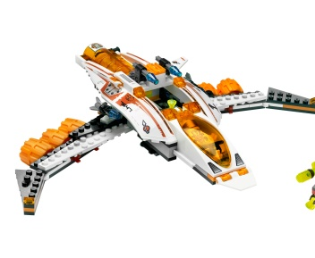

Офіційне джерело · LEGO 7647
MX-41 Switch Fighter · польотна конфігурація
Довгий біло-помаранчевий корпус із помаранчевою кабіною-носом та широкими складаними боковими рамами.
Цільовий зовнішній вигляд · кадрування без зміни моделі
Довгий біло-помаранчевий корпус із помаранчевою кабіною-носом та широкими складаними боковими рамами.
Цільовий зовнішній вигляд · кадрування без зміни моделіТой самий корпус над плитою шасі; шість помаранчевих коліс відкриті й читаються знизу.
Бокові рами складаються між цими станами; корпус лишається з'єднаним протягом ігрової трансформації.
Видимі адаптації: немає. У переході не показувати ручне роз'єднання корпуса з інструкції; нові зовнішні деталі не додаються.
LEGO 7647 — офіційна сторінка інструкцій · офіційна інструкція PDF, стор. 15–64 · маніфест і хеш джерела.
unit.astronauts.mx41_switch_fighter